UML是什么
UML即
UML其实有很多种图的形式，但是目前无需关心太多，我所关注的是
类图
我们如果去菜鸟教程查看，通常会遇到这种形式的图：
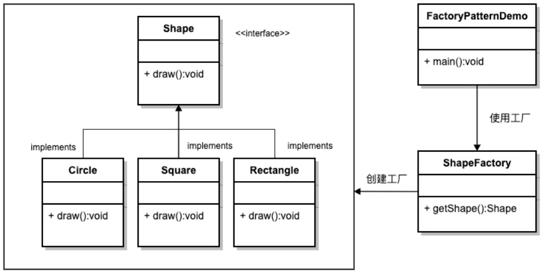
这就是类图
关系
类图对象与对象之间有不同的关系，具体如下：
- 泛化Generalization
- 实现Realization
- 关联Association
- 聚合Aggregation
- 组合Composition
- 依赖Dependency
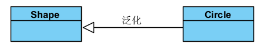
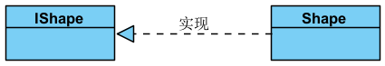
关联本身也是一种关系，
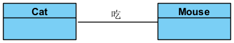
Eat()关联细分有两种情况，即组合聚合：
组合
组合指的是强关联，父节点的存亡会影响子节点(父Destroy子也会Destroy)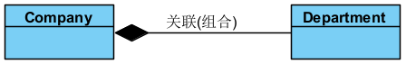
可以看到是子指向父 聚合 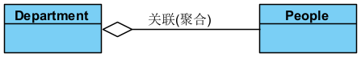
聚合指的是**弱关联**，父节点的存亡不影响子节点 可以看到同样是子指向父
对于关联的两种情况，都可以标注更多信息，即
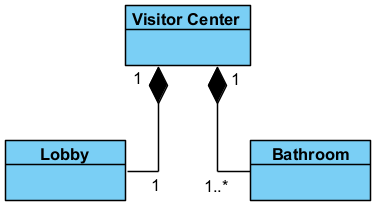
游客中心由大厅和卫生间组成，大厅只存在1个，而卫生间至少1个(>=1)
反过来说，大厅只可能属于某一个游客中心的(不存在公用可能)，卫生间也是如此
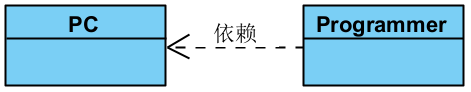
从以上几种关系中我们能够得出一个结论：
类
对于类图来说，最关键的当然是类，那么
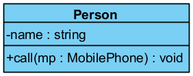
可以看到类被分成了3个部分，从上到下依次为：
- 类名
- 属性Attributes/Fields/Variables/Properties
这里的属性包括了字段与属性 - 函数Methods/Functions/Operations
可以看到属性与函数的开头有一个符号，这代表着其可见性，其实就是访问修饰符：
+：public-：private#：protected~：internal(一般被称为package/default，应该是Java的说法) - 底线：static
(就是在字的底下有条线)
写法：
- 类名
对于类来说，并不会使用符号来代表它的可见性，但是会使用斜体或 << >>表示抽象abstract - 属性
属性的写法很固定，即：符号+名称+:+类型 - 函数
函数有2种写法：- 不加声明，即：
符号+函数名() - 加声明，即：
符号+函数名(形参:类型):类型
通常函数选用不加声明形式 ，添加过于复杂且意义不大
当然，+call()/+call():void/+call(mp:MobilePhone):void甚至+call(mp)/+call(MobilePhone)，只要信息适度即可
- 不加声明，即：
使用
在这里我选择的是
写在前面：
界面操作简述
刚上手软件，说实话会看的比较蒙，因为功能多且复杂，但是基本按钮都点过之后就能大概了解了
1.项目的创建
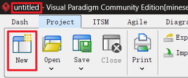
可以看到一打开软件标题中显示的是
untitled，此时是未创建状态，点击New即可进行创建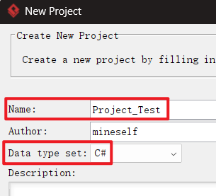
填入Name/Data type set即可，这里比较重要的是Data type set，我们需要选择相应的语言，这决定了
2.图的添加
此时项目本身已经创建完毕，但是这只是一个空项目没有图，所以需要添加图
有2种方式：
- 可以看到初始界面有一快捷创建方式，使用即可
对于UML类图，依次选择UML->Class Diagram->Blank->输名字即可 - 标准流程为点击上侧菜单View按钮，在Panes种找到Diagram Navigator调出
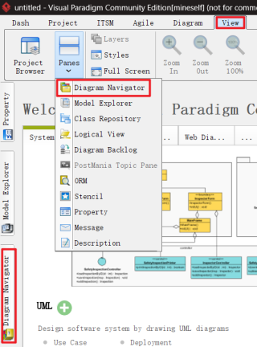
对于UML类图，选择Class Diagram创建一个Diagram即可(两种都可以，New Class Diagram为直接创建(Blank没名字)，New Diagram为完整创建)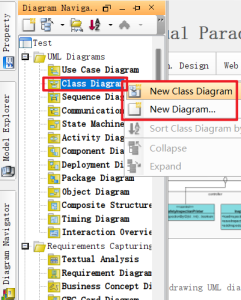
可以发现
由上述内容我们也能发现：
3.图的绘制
之后我们就得到到一个Blank类图，左侧都是绘制工具，我们也能从中找到许多熟悉的东西：
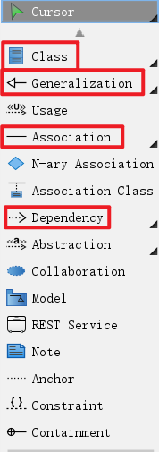
点击右侧黑色小三角即可展开细分，如Association下有细分Aggergation/Composition
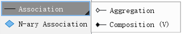
快捷方式：双击，功能为
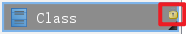
可以看到该状态下存在一个黄色小点
具体绘制的话多尝试即可
实例:Singleton Pattern
这是官方的一个例子，链接如下：
Singleton Pattern Tutorial
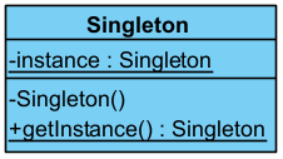
这里挑重点说：
由于
instance变量是static的，所以需要加上底线，方法如下：
右键字段->Model Element Properties->Scope->classifier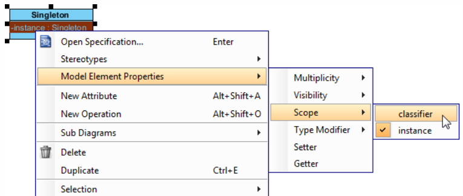
同时我们也能看到其它相应的设置：Multiplicity：数量信息
Visibility：可见性
Scope：域(
static/非static)Type Modifier：类型修饰符，即
额外的类型数据 *：指针&：引用[]：数组<>：泛型- Other：自行扩充
Setter/Getter：Get/Set方法或属性
(属性就是一种Get/Set方法) 默认情况下没有表示 ，显示方法：- 类图空白处右键->Presentation Options->Attribute Display Options->Show Getter Setter Properties
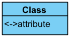
<代表Getter，>代表Setter - 直接class下右键->Add->Attribute with Getter and Setter
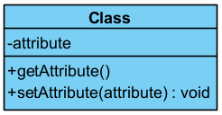
由此我们也能知道一件事：
在Presentation Options有大量表示上的设置 - 类图空白处右键->Presentation Options->Attribute Display Options->Show Getter Setter Properties
问题：const怎么表示 可以看到有static，但是没有const，那么我们有2种选择：直接在类型上添加( const int)/借助Type Modeifer添加(后缀const)右键class我们可以看到一个选项为
Stereotypes ，大致含义就是模板类
但是观察下来应该是需要订阅才能使用 ，而且具体来说过于复杂
这里简单讲述一下其功能：
为单例类设置为<<PTN Members Creatable>>，之后就可以将类图定义为Design Pattern，再开一个类图，应用该Design Pattern，添加类该有的字段与函数即可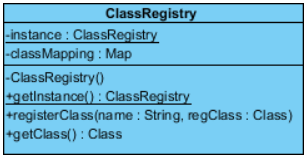
可以看到核心就是类型全被替换了，以及instance字段与 getInstance()函数自动添加了
除了以上的内容，我们可以自行尝试一下并扩充：
对于class来说，同样具有Model Element Properties，具体如下：
- Visibility：可见性
- Abstract：抽象类
- Leaf：叶子类(即sealed类，没有子类)
- Root：根类(没有父类)
- Final Specialization：等价于Leaf(更规范，也更难看懂)
- Business Model：业务类(如商品就是业务类，而日志就是非业务类(技术类))
规范制定
根据以上分析内容，其实可以发现缺少了许多内容，比如说override/virtual等关键字根本没有，那么这里简单制定一下对特殊情况的处理：
基础
默认自带的有些比较特殊，如下：- 底线：
static - 斜体：
abstract - 没有表现：
Getter/Setter
- 底线：
后缀型Type Modifier
Type Modifier前面提到过，可能用到的情况如下：- 数组
[] - 泛型
<>- 无约束：
<T> - 有约束：
<约束类型>注意：编写时应该先不处理Type Modifier，然后通过选中Enter进行修改，否则会附着到Return Type
- 无约束：
- 数组
前缀型Stereotypes
Stereotypes前面同样提到过，可能是一个模板，但我们也可以添加，添加后在最前面就会出现<<XXX>>
具体添加如下内容：- Attribute
readonlyconst
- Operation
virtualoverride显式接口(就是如IXXX.函数名的接口显式实现)
要注意的是
默认没有 这些内容的，所以需要自行添加：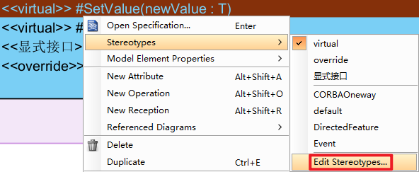
- Attribute
功能备注
这里稍微记录一下我发现的VP里的功能：
- 当类实现了某接口时，对类右键->Related Elements->Realize all Interfaces即可实现接口
- 使用
Ctrl+CCtrl+V复制会导致关联，想要无关联复制的话可以通过右键Duplicate复制 - 对于主从关系(
M/a)，如果需要将a升格为M，可以通过对a类右键->Selection->Set as Master View设置 - 如果不想点击到背景的Rectangle，可以在任意处右键Layers添加图层，然后选中后设置图层即可
实践
完整版：QFramework
 在`QFramework框架分析`中，我使用了最完整，即把所有类的字段函数的完整形式都填入
在`QFramework框架分析`中，我使用了最完整，即把所有类的字段函数的完整形式都填入
个人认为：
最麻烦的地方是：IXXX接口会实现各种ICanXXX接口，但是如果放在一张图中，不可能看得清楚，所以总共拆成共7张图(合并了1张)完成
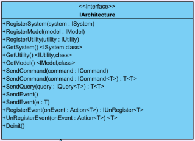
就以最核心的
IArchitecture为例，我并不需要知道RegisterSystem()需要一个ISystem类型的system，知道有这个操作足以，如果真的关心看源码的即可，同样的SendCommand()的重载也没什么必要，简单总结
个人认为完整版不算是一种有意义的记录方式，主要是因为非常耗时，当然，如果时间多的话这么记录还是可行的